Операционный усилитель - это усилок с двумя входами с большим коэфициентом усиления сигнала и одним выходом. Т.е. у нас Uвых= K*Uвх а К в идеале равно бесконечности. На практике, конечно, там числа поскромней. Скажем 1000000.
Входа два. Один из них прямой, а другой инверсный.
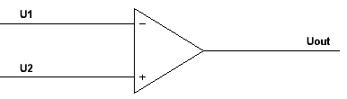
Напряжение на выходе в таком случае рассчитывается как:
Uout=(U2-U1)*K
Очевидно, что если на прямом входе напряжение больше чем на инверсном, то на выходе плюс бесконечность. А в обратном случае будет минус бесконечность. Разумеется, в реальной схеме плюс и минус бесконечности не будет, а их замещать будет максимально высокое и максимально низкое напряжение питания усилителя. На основе этого можно реализовать следующие возможности:
Компаратор
Устройство, позволяющее сравнивать два аналоговых сигнала и выносить вердикт, — какой из сигналов больше.
Но одним компаратором дело не ограничивается, ведь если ввести обратную связь, то из ОУ можно сделать очень многое.
Обратная связь
Если мы сигнал возьмем с выхода и отправим прямиком на вход, то возникнет обратная связь.
Положительная обратная связь
Возьмем и загоним в прямой вход сигнал сразу с выхода.
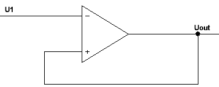
В этом случае выход мгновенно свалится в бесконечный минус, а в реале ляжет на шину отрицательного питания и все. Поэтому такое включение применяется крайне редко. Например, в триггере Шмитта для обеспечения гистерезиса.
Триггер Шмитта
Представим себе компаратор включенный по такой вот схеме и запитанный от +/- 15 вольт:
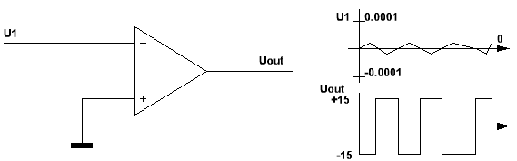
А что будет если напряжение будет равно нулю? По идее, на выходе должен быть ноль. Но в реальности напряжение никогда не будет равно нулю. Ведь даже если на один электрон заряд правого перевесит заряд левого, то уже этого достаточно, чтобы на бесконечном усилении вкатить потенциал на выход. И на выходе начнется форменный ад — скачки сигнала то туда, то сюда со скоростью случайных возмущений, наводящихся на входы компаратора.
Для решения этой проблемы вводят гистерезис. Т.е. своего рода зазор между переключениями из одного состояния в другое. Для этого вводят положительную обратную связь:
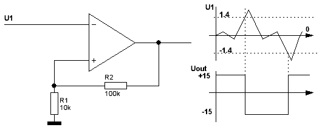
Считаем, что на инверсном входе в этот момент +10 вольт. На выходе с ОУ минус 15 вольт. На прямом входе уже не ноль, а небольшая часть выходного напряжения с делителя. Примерно -1.4 вольта Теперь, пока напряжение на инверсном входе не снизится ниже -1.4 вольта выход ОУ не сменит своего напряжения. А как только напряжение станет ниже -1.4, то выход ОУ резко перебросится в +15 и на прямом входе будет уже смещение в +1.4 вольта. И для того, чтобы сменить напряжение на выходе компаратора сигналу U1 надо будет увеличиться на целых 2.8 вольта, чтобы добраться до верхней планки в +1.4.
Возникает своеобразный зазор где нет чувствительности, между 1.4 и -1.4 вольтами. Ширина зазора регулируется соотношениями резисторов в R1 и R2. Пороговое напряжение высчитывается как Uout/(R1+R2) * R1 Скажем 1 к 100 даст уже +/-0.14 вольт.
Но все же ОУ чаще используют в режиме с отрицательной обратной связью.
Отрицательная обратная связь
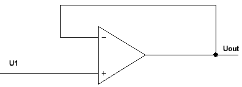
В случае отрицательной обратной связи у ОУ появляется интересное свойство. Он всегда будет пытаться так подогнать свое выходное напряжение, чтобы напряжения на входах были равны, в результате давая нулевую разность.
И получился у нас повторитель. Т.е. на входе U1, на инверсном входе Uout = U1. Ну и получается, что Uout = U1.
Представим себе такую ситуацию - есть датчик, выполненный в виде резистивного делителя:
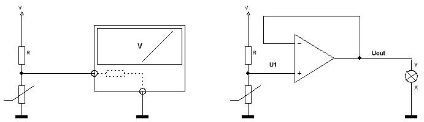
Нижнее сопротивление меняет свое значение, меняется расклад напряжений выхода с делителя. А нам надо снять с него показания вольтметром. Но у вольтметра есть свое внутреннее сопротивление, пусть большое, но оно будет менять показания с датчика. Более того, если мы не хотим вольтметр, а хотим чтобы лампочка меняла яркость? Лампочку то сюда никак не подключить уже. Поэтому выход буфферизируем операционным усилителем. Его входное сопротивление огромно и влиять он будет минимально, а выход может обеспечить вполне ощутимый ток (десятки миллиампер, а то и сотни), чего будет достаточно для работы лампочки.
В общем, применений для повторителя найти можно. Особенно в прецезионных аналоговых схемах. Или там где схемотехника одного каскада может влиять на работу другого, чтобы разделить их.
Усилитель
А теперь сделаем финт ушами — возьмем нашу обратную связь и через делитель напряжения подсадим на землю:
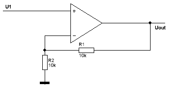
Теперь на инверсный вход подается половина выходного напряжения. А усилителю по-прежнему надо уравнять напряжения на своих входах. Что ему придется сделать — поднять напряжение на своем выходе вдвое выше прежнего, чтобы компенсировать возникший делитель.
Теперь будет U1 на прямом. На инверсном Uout/2 = U1 или Uout = 2*U1.
Поставим делитель с другим соотношением — ситуация изменится в том же ключе. Формула:
Uout = U1*(1+R1/R2)
Мнемонически запоминается что на сто делится:
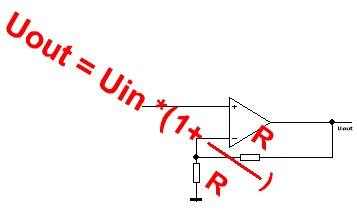
Таким образом, можно очень легко умножать аналоговые значения на числа больше 1. А как быть с числами меньше единицы?
Инвертирующий усилитель
Тут поможет только инверсный усилитель. Разница лишь в том, что мы берем и прямой вход коротим на землю.
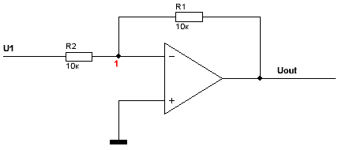
При этом получается, что входной сигнал идет по цепи резисторов R2, R1 в Uout. При этом прямой вход усилителя посажен на ноль. Вспоминаем повадки ОУ — он постарается любыми правдами и неправдами сделать так, чтобы на его инверсном входе образовалось напряжение равное прямому входу. Т.е. ноль. Единственный вариант это сделать — опустить выходное напряжение ниже нуля настолько, чтобы в точке 1 возник ноль.
Итак. Представим, что Uout=0. Пока равно нулю. А напряжение на входе, например, 10 вольт относительно Uout. Делитель из R1 и R2 поделит его пополам. Таким образом, в точке 1 пять вольт.
Пять вольт не равно нулю, и ОУ опускает свой выход до тех пор, пока в точке 1 не будет ноль. Для этого на выходе должно стать (-10) вольт. При этом относительно входа разность будет 20 вольт, а делитель обеспечит нам ровно 0 в точке 1. Получаем инвертор.
В общем, формула коэффициента усиления для такого усилка будет следующей:
Uout = — Uin * R1/R2
Ну и мнемоническая картинка для быстрого запоминания:
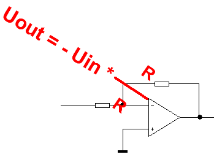
Вычитающая схема
Однако, никто же не мешает подать на прямой вход не ноль, а любое другое напряжение. И тогда усилитель будет пытаться приравнять свой инверсный вход уже к нему. Получается вычитающая схема:
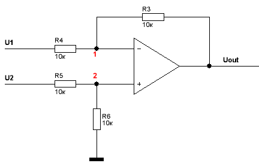
Допустим, U2 и U1 будут по 10 вольт. Тогда на 2й точке будет 5 вольт. А выход должен будет стать таким, чтобы на 1й точке стало тоже 5 вольт. То есть нулем. Вот и получается, что 10 вольт минус 10 вольт равняется ноль.
Если U1 станет 20 вольт, то выход должен будет опуститься до -10 вольт.
Сами посчитайте — разница между U1 и Uout станет 30 вольт. Ток через резистор R4 будет при этом (U1-Uout)/(R3+R4) = 30/20000 = 0.0015А, а падение напряжения на резисторе R4 составит R4*I4 = 10000*0.0015 = 15 вольт. Вычтем падение в 15 вольт из входных 20 и получим 5 вольт.
Таким образом, наш ОУ прорешал арифметическую задачку из 10 вычел 20, получив -10 вольт.
Более того, в задачке есть коэффициенты, определяемые резисторами. Просто у меня, для простоты, резисторы выбраны одинакового номинала и поэтому все коэффициенты равны единице. А на самом деле, если взять произвольные резисторы, то зависимость выхода от входа будет такой:
Uout = U2*K2 — U1*K1
K2 = ((R3+R4) * R6 ) / (R6+R5)*R4
K1 = R3/R4
Мнемотехника для запоминания формулы расчета коэффициентов такова:
Прям по схеме: числитель у дроби вверху, поэтому складываем верхние резисторы в цепи протекания тока и множим на нижний. Знаменатель внизу, поэтому складываем нижние резисторы и множим на верхний.
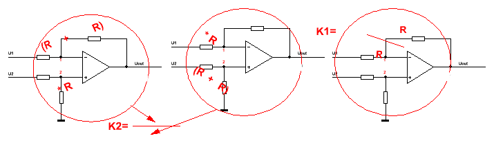
Если же вводные резисторы (R4 и R5) равны друг другу. И резистор обратной связи и резистор на землю (R3 и R6) тоже равны друг другу, то формула упрощается до:
Uout = R3/R4 (U2 — U1).
Таким образом, на одном усилке можно два сигнала сначала вычесть, а потом умножить на константу. Раз можно вычитать, то можно и суммировать.
Сумматор инвертирующий
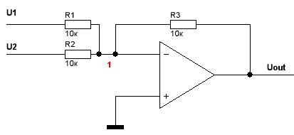
Тут все просто. Т.к. точка 1 у нас постоянно приводится к 0, то можно считать, что втекающие в нее токи всегда равны U/R, а входящие в узел номер 1 токи суммируются. Соотношение входного резистора и резистора в обратной связи определяет вес входящего тока.
Ветвей может быть сколько угодно, я же нарисовал всего две.
Uout = -1(R3*U1/R1 + R3*U2/R2)
Резисторы на входе (R1, R2) определяют величину тока, а значит общий вес входящего сигнала. Если сделать все резисторы равными, как у меня, то вес будет одинаковым, а коэффициент умножения каждого слагаемого будет равен 1.
Uout = -1(U1+U2)
Сумматор неинвертирующий
Тут немного сложней, но принцип похож:
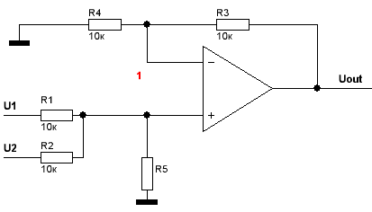
Uout = U1*K1 + U2*K2
K1 = R5/R1
K2 = R5/R2
Причем резисторы в обратной связи должны быть такими, чтобы соблюдалось уравнение R3/R4 = K1+K2
В общем, на операционных усилителях можно творить любую математку, складывать, умножать, делить, считать производные и интегралы. Причем практически мгновенно. На ОУ делают аналоговые вычислительные машины.